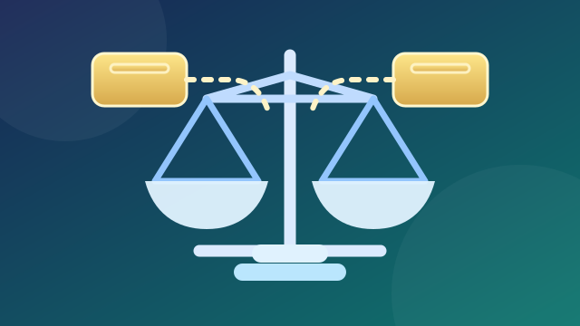
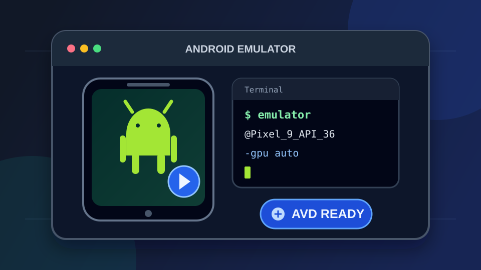
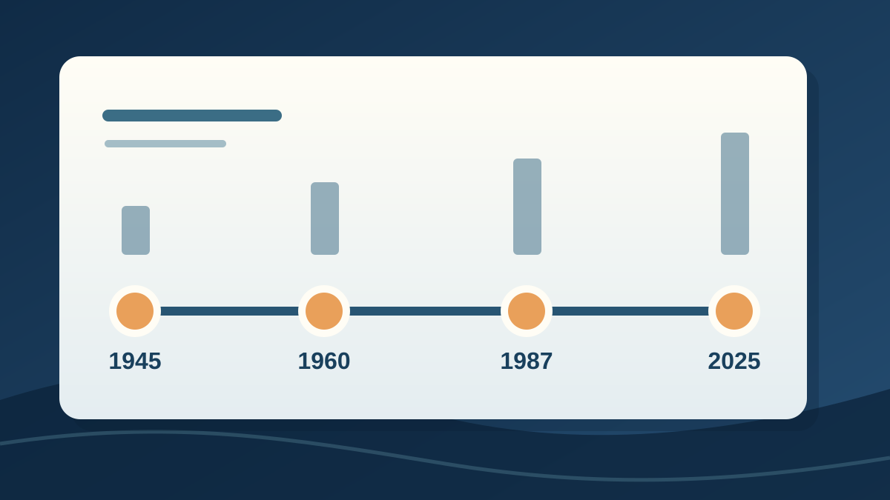
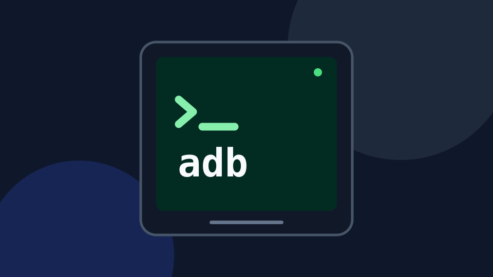
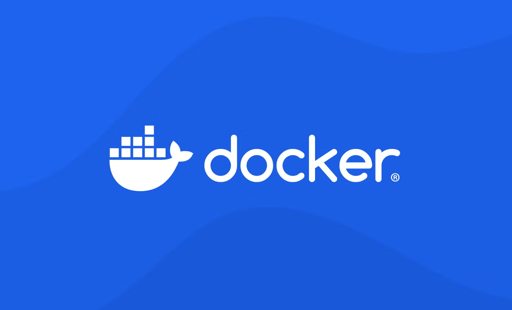
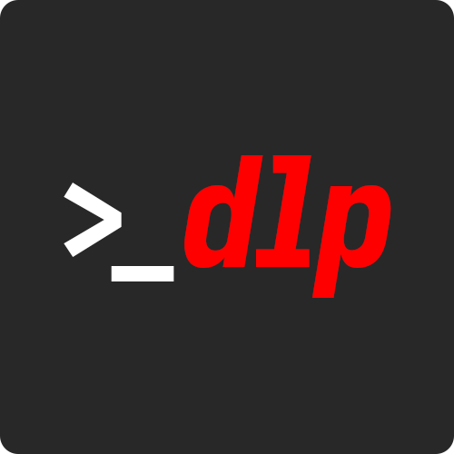
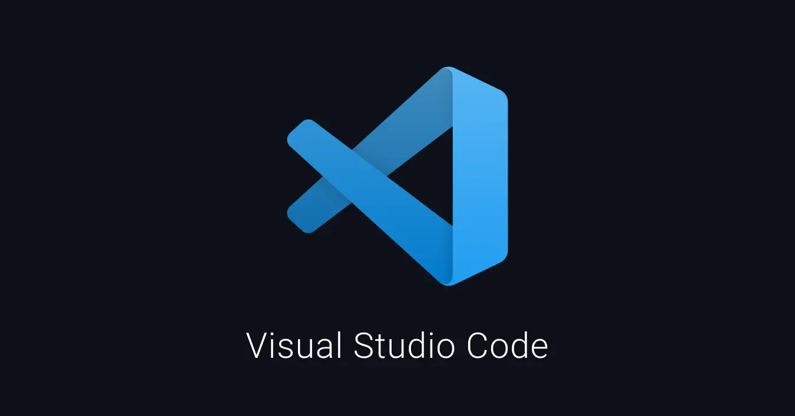
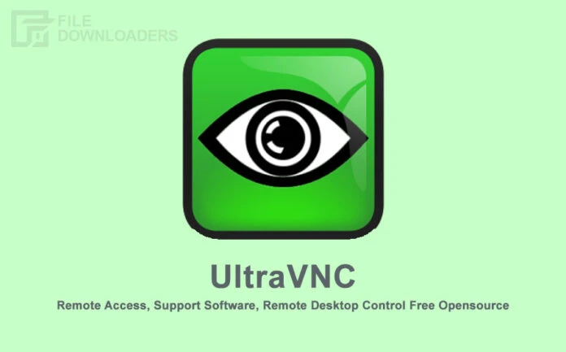
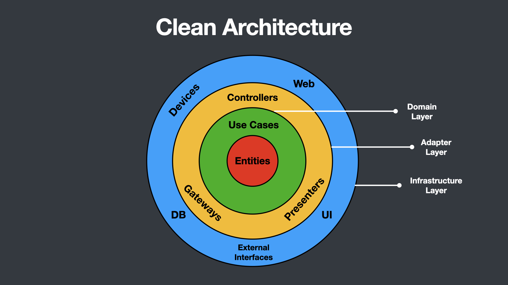

세금
2026년 상속세 개편안: 가업상속공제와 주식 평가는 어떻게 달라지나
2026년 8월 발표되고 9월 국회에 제출된 상속세 개편안의 가업상속공제, 사후관리, 주가 누르기 평가 규정과 심사 현황을 정리합니다.
#상속세#가업상속공제
9분
22개의 글
2026년 8월 발표되고 9월 국회에 제출된 상속세 개편안의 가업상속공제, 사후관리, 주가 누르기 평가 규정과 심사 현황을 정리합니다.

현행 유산세와 정부가 제안한 유산취득세의 차이, 상속인별 공제와 조세회피 방지장치, 국회 심사 현황을 정리합니다. 2026년 9월 기준.

Android Emulator의 AVD 조회·실행·종료부터 콜드 부팅, 초기화, GPU·네트워크 옵션과 가속 문제 해결 방법까지 정리합니다.
AFPK의 교육·시험·인증 절차와 모듈별 과목·합격기준을 살펴보고, CFP와의 응시요건·실무경험·시험 방식 차이를 비교합니다.

광복과 정부 수립, 전쟁, 산업화와 민주화, 외환위기부터 최근 헌정 사건까지 주요 사건을 시간순으로 정리합니다.
1·2종 보통 운전면허 학과시험의 합격기준과 준비물, 교육·신체검사 순서, 공식 문제은행 이용 방법을 정리합니다.
NIA 공식 안내를 기준으로 정보시스템감리사 응시자격, 필기 5과목, 면접과 교육 절차, 비용과 공고 확인 방법을 정리합니다.
정보보안기사의 필기·실기 시험과목, 응시자격, 2026년 제1·2·4회 접수·시험·합격 발표 일정을 KCA 공식 안내를 기준으로 정리합니다.
박정희 정부부터 이재명 정부까지 주택 공급, 거래 규제, 세금·대출, 임차인 보호 정책의 흐름을 비교합니다. 2026년 9월 기준.

ADB 설치와 기기 연결부터 앱 설치·실행, Logcat, 화면 캡처와 녹화, 파일 전송, 무선 디버깅까지 자주 쓰는 명령어를 정리합니다.

Docker의 이미지와 컨테이너 개념을 이해하고, 빌드·실행·상태 확인·로그 조회·리소스 정리에 필요한 기본 명령어를 알아봅니다.

yt-dlp 설치부터 영상 화질 선택, MP3 변환, 자막과 재생목록 다운로드까지 자주 사용하는 명령어를 알아봅니다.
Ubuntu를 처음 사용하는 사람을 위해 시스템 업데이트, 기본 터미널 명령어, 패키지 관리 방법을 간단히 정리합니다.

VS Code의 색 테마를 빠르게 변경하고 확장 테마를 설치하거나 settings.json에서 일부 색상을 직접 설정하는 방법을 알아봅니다.
Cloudflare DNS-01 Challenge와 Certbot을 이용해 mypage.com 와일드카드 인증서를 발급하고 자동 갱신하는 방법을 알아봅니다.

오픈소스 원격 데스크톱 솔루션 Ultra VNC의 설치부터 Repeater, noVNC를 활용한 웹 기반 원격제어까지 완벽 가이드.
Google Fit API의 구조와 활용법을 알아봅니다. Recording, Sensors, History API를 이용한 피트니스 데이터 수집 방법을 상세히 설명합니다.

증가하는 사용자 요구사항에 유연하게 대처하기 위한 Legacy 소스의 Clean Architecture 기반 리팩토링 작업을 검토합니다.

WPF 애플리케이션에서 사용하는 Resource Files, Content Files, Site of Origin Files의 차이점과 활용 방법을 알아봅니다.

WPF 프로젝트에서 Windows Forms를 함께 사용하는 방법을 알아봅니다. UseWindowsForms 설정만 추가하면 간단하게 해결됩니다.

WPF 애플리케이션에 CefSharp을 활용하여 웹 브라우징 기능을 추가하는 방법을 알아봅니다. Nuget을 통한 설치부터 구현까지 상세히 설명합니다.

Tizen Studio CLI를 활용하여 갤럭시워치3 앱을 빌드, 패키징, 설치하는 전체 과정을 명령어 기반으로 상세히 설명합니다.
검색 결과가 없습니다